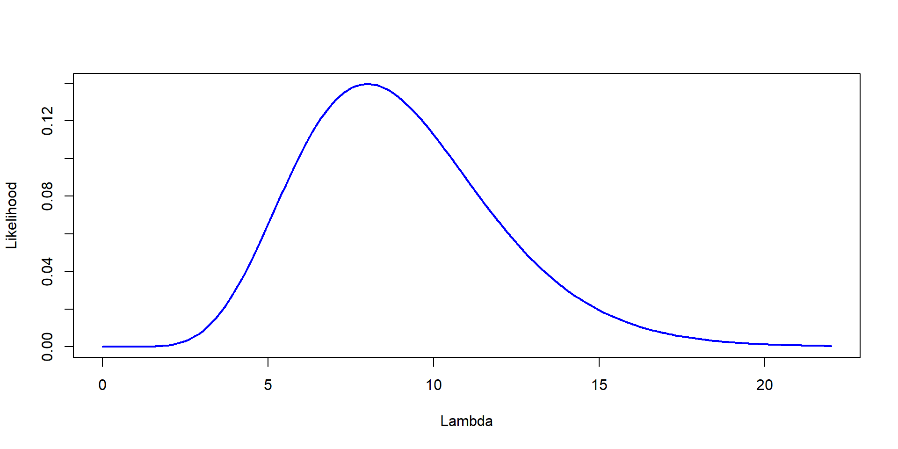
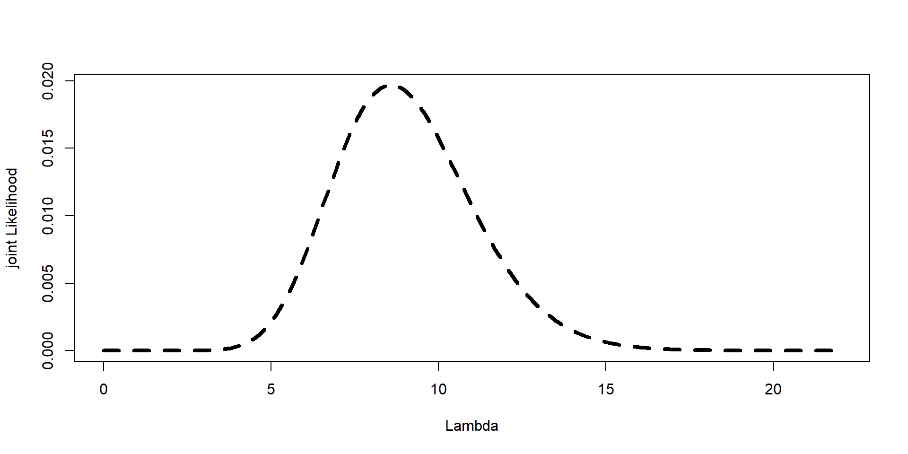
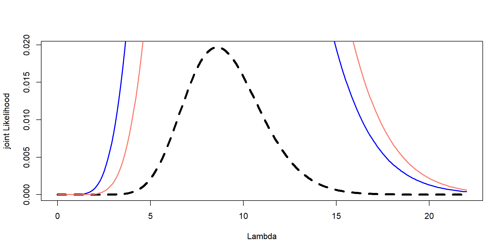
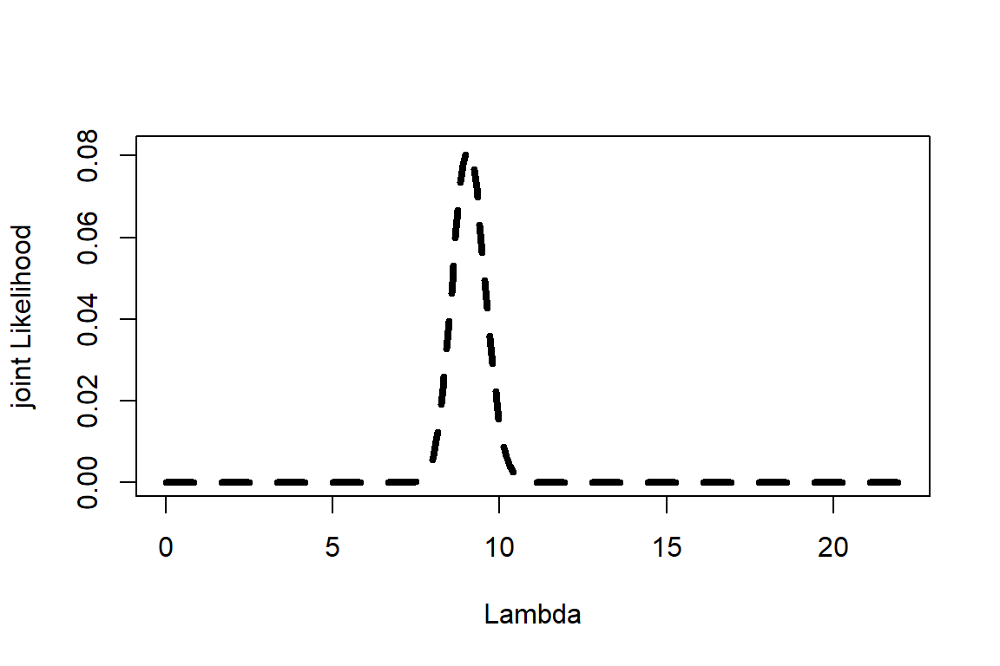
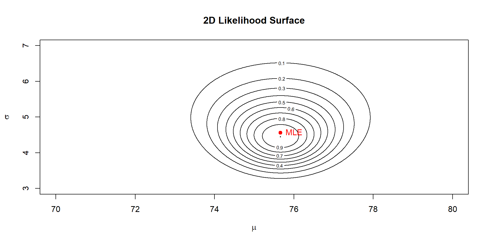

Gives us a posterior, based on a prior an a Likelihood –> models a probability. It is obtained by the product of:
Likelihood, probability of a parameter being something, given our data
Prior: the information we had about a system
You are surveying bats near a beach. You set up one mist net and caught 8 bats
From previous surveys, you know that the mean catch per net is around 10 bats, with a standard deviation of around 3 bats
Estimate Likelihood, prior, combine them (joint) and estimate the posterior (normalized so that it sums to 1)
Plot all three on the same graph: likelihood, prior, and posterior –> Scale the prior and likelihood if necessary so they fit on the same plot
Find the most probable value of \(\lambda\)
What would the first step be?



Need scaling
Based on posterior
flowchart LR A[Experience] --> B[Observation] B --> C[Updated Belief] C --> A
Be it human relations, weather, or sports!
Assume you have data for 37 night nets, rather than just one. Same prior as before (mean =10 and sd =3)
How would we estimate the posterior?
Lambda=seq(0,22, by=0.1)
Likelihood=sapply(Lambda, function(l) prod(dpois(bats, l)))
mu <- 10
sigma <- 3
beta <- mu / sigma^2
alpha <- mu * beta
prior <- dgamma(Lambda, shape = alpha, rate = beta)
jointL<-prior*Likelihood
Posterior<- jointL/sum(jointL)
plot(Lambda,Posterior,type="l", lwd=4, lty=2,ylab="joint Likelihood", xlab="Lambda")
One estimate (most likely value; expected value)
Uncertainty is given by Confidence Intervals
A posterior distribution
Represents our updated belief about \(\lambda\)
Uncertainty is both shape and spread!
Imagine now you have continuous data
You have a mean
You have variance
Bayesian needs a 2-d likelihood surface
Imagine you want to test the likelihood of \(\mu\) from 70 to 80
You want to tests the likelihood of \(\sigma\) from 3 to 7
Each time you run a likelihood estimate you run a joint likelihood of both mean and sd and you want to test all potential combinations!
For a normal model with data
\[y_i \sim \text{Normal}(\mu, \sigma) \]
We need to explore both parameters:
\[P(\mu, \sigma \mid y) \propto P(y \mid \mu, \sigma) \times P(\mu, \sigma) \]
Frequentist:
- Closed-form solutions
\[\hat{\mu} = \bar{y} \\ \hat{\sigma} = \text{sd}(\bar{y})\]
Bayesian:
- Must compute (or sample) over the entire 2D surface!
set.seed(123)
y <- rnorm(20, mean = 75, sd = sqrt(22))
# Define grid for mu and sigma
mu_vals <- seq(70, 80, by=0.01 )
sigma_vals <- seq(3, 7, by=0.01)
# Compute log-likelihood surface
ll <- outer(mu_vals, sigma_vals, Vectorize(function(mu, sigma) {
sum(dnorm(y, mean = mu, sd = sigma, log = TRUE))
}))
# Convert to likelihood
lik <- exp(ll - max(ll)) # rescale for plotting
In Bayesian, if we are doing one estimate (\(\lambda\)) we can do a curve
If we are doing two estimates, we need a contour plot, or a surface plot
For two estimates we have essentially a matrix
More than two estimates?
Example from assignment 5
codmodel1<-glm(Prevalence~Length+Year+Area,data=cod,family = binomial(link="logit"))
summary(codmodel1)
Call:
glm(formula = Prevalence ~ Length + Year + Area, family = binomial(link = "logit"),
data = cod)
Coefficients:
Estimate Std. Error z value Pr(>|z|)
(Intercept) -0.465947 0.269333 -1.730 0.083629 .
Length 0.009654 0.004468 2.161 0.030705 *
Year2000 0.566536 0.169715 3.338 0.000843 ***
Year2001 -0.680315 0.140175 -4.853 1.21e-06 ***
Area2 -0.626192 0.186617 -3.355 0.000792 ***
Area3 -0.510470 0.163396 -3.124 0.001783 **
Area4 1.233878 0.184652 6.682 2.35e-11 ***
---
Signif. codes: 0 '***' 0.001 '**' 0.01 '*' 0.05 '.' 0.1 ' ' 1
(Dispersion parameter for binomial family taken to be 1)
Null deviance: 1727.8 on 1247 degrees of freedom
Residual deviance: 1537.6 on 1241 degrees of freedom
(6 observations deleted due to missingness)
AIC: 1551.6
Number of Fisher Scoring iterations: 47 different estimates!
Joint Likelihood for each one!
Really hard to choose a starting value!
If we get 8 bats, easy to choose a beta. In a model it is hard to choose a beta!
Imagine a simple linear model
\[ y_i \sim \beta_0 + \beta_1x_{1i} + \beta_2x_{2i} + \beta_3x_{3i} + \epsilon_i \]
Posterior: \(P (\beta_0, \beta_1, \beta_2, \sigma | data)\)
We cannot make a grid! We cannot visualize!
In frequentist: Equations that minimize residuals. It uses calculus and algebra
You get the same solution each time. If all of you run the same model with the same data in R, you will all get the same betas as me!
Bayesian Integrates a posterior –> No closed solution!
Different solution each time!
Why? Bayesian cannot solve this using an equation. So, it samples from it using Markov Chain Monte Carlo (MCMC!) and obtains a probability from it
Ever heard of this?
Let’s try this! With a game!
Experience how MCMC explores a likelihood surface step-by-step. NO COMPUTER NEEDED!
DO NOT RUN ANYTHING YET!
Choose one student to do the random walk, one to be the computer or tester
Experience how MCMC explores a likelihood surface step-by-step. NO COMPUTER NEEDED!
x <- seq(-50, 150, by = 1)
# Create a landscape with 3 peaks of different widths and heights
likelihood <-
0.7 * dnorm(x, mean = 20, sd = 10) +
1.0 * dnorm(x, mean = 80, sd = 15) +
0.4 * dnorm(x, mean = 120, sd = 5)
# Normalize so it looks like a probability surface
likelihood <- likelihood / max(likelihood)
plot(x, likelihood, type = "l", lwd = 3, col = "darkgreen",
xlab = "Parameter value (x)",
ylab = "Relative likelihood",
main = "Example Likelihood Landscape")Student B: Write down the starting point (x) and mention it to student A. Student A tell student B an approximate value of the Likelihood. Write it down.
Student B: flips a “coin” in R:
If 1 –> propose x + 3
If 0 –> propose x – 3
Repeat ~20 times
Plot in paper (x value vs Likelihood)
Start with a random guess.
Propose a new set of parameters.
Accept or reject based on how likely they are given the data.
Repeat thousands of times. The chain “learns” the posterior shape.
Most of our software uses a Gibbs sampler.
It tests one parameter at a time.
Fixes some parameters and moves one around
After a while, it switches to a different parameter, and so on
Wednesday: Plots
Friday: A Bayesian example (only for those interested).
Next Week: Multivariate (lecture). Friday lab, no need to turn in, but an exercise I want you to do
Monday 24: Session to work on final project (no class)
Monday 1st. Session to work on final project (no class). Free coffee + snacks (RSVP)!